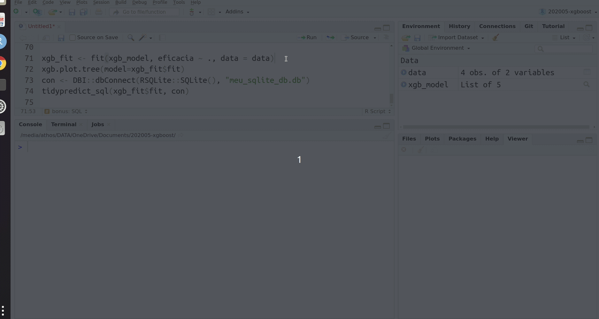

library(tidymodels)
library(tidypredict)
library(xgboost)
# data -----------------------------------------------------
data <- tibble(
dose = c(2, 8, 12, 18),
eficacia = c(-6, 4, 5, -5)
)
# model specification -------------------------------------
xgb_model <- boost_tree(min_n = 1,
trees = 2
) %>%
set_engine("xgboost", lambda = 0) %>%
set_mode("regression")
# model fit ----------------------------------------------
xgb_fit <- fit(xgb_model, eficacia ~ dose, data = data)
# Connection to the SQL database --------------------------
con <- DBI::dbConnect(RSQLite::SQLite(), "meu_sqlite_db.db")
# Transcribing XGBoost to SQL -----------------------------
tidypredict_sql(xgb_fit$fit, con)
## <SQL> (CASE
## WHEN (`dose` < 15.0 OR (`dose` IS NULL)) THEN -1.6500001
## ELSE -1.95000005
## END + CASE
## WHEN (`dose` < 10.0 OR (`dose` IS NULL)) THEN 0.734999955
## ELSE 0.945000052
## END) + 0.5XGBoost predictions straight from SQL
tutorials
sql
xgboost
machine learning
Build an XGBoost in R and have SQL generate the predictions with one line of code using {tidypredict}.
What you’ll learn to do by the end of this post is:

That is, once you have an XGBoost model fitted in your R, you can ask {tidypredict} to generate the SQL query that would compute the score. PS: the XGBoost in the gif has 2 trees.
Reasons to use it
If there is a very powerful SQL server (or cluster, etc), the prediction can be done directly inside the database, with no need for other tools. Also, putting it into production will be a CTRL+C/CTRL+V away =P.
The XGBoost predictor
The value predicted by XGBoost is, deep down, a sum of CASE WHEN’s (or IF ELSE’s). The number of trees defines how many CASE WHEN’s will be added up.
The predictor of an XGBoost with 2 trees would look like this in SQL:
<SQL> 0.0 + CASE
WHEN ((`dose` < 5.0 OR ((`dose`) IS NULL))) THEN (-1.95000005)
WHEN (`dose` >= 14.0 AND `dose` >= 5.0) THEN (-1.6500001)
WHEN ((`dose` < 10.0 OR ((`dose`) IS NULL)) AND (`dose` < 14.0 OR ((`dose`) IS NULL)) AND `dose` >= 5.0) THEN (1.05000007)
WHEN (`dose` >= 10.0 AND (`dose` < 14.0 OR ((`dose`) IS NULL)) AND `dose` >= 5.0) THEN (1.35000002)
END + CASE
WHEN ((`dose` < 5.0 OR ((`dose`) IS NULL))) THEN (-1.36500013)
WHEN (`dose` >= 14.0 AND `dose` >= 5.0) THEN (-1.15499997)
WHEN ((`dose` < 10.0 OR ((`dose`) IS NULL)) AND (`dose` < 14.0 OR ((`dose`) IS NULL)) AND `dose` >= 5.0) THEN (0.734999955)
WHEN (`dose` >= 10.0 AND (`dose` < 14.0 OR ((`dose`) IS NULL)) AND `dose` >= 5.0) THEN (0.945000052)
END + 0.5Minimal code
The true hero of the code below is the line tidypredict_sql(xgb_fit$fit, con) from the {tidypredict} package, which takes the fitted XGBoost object and returns the SQL query with the CASE WHEN’s.
Fitting the XGBoost with {tidymodels}
Using {dplyr} to run code in SQL
# just uploading the data to the SQL database --------
copy_to(con, data, "data", overwrite = TRUE)
# Creating the `pred` column with the SQL predictions
data_sql <- tbl(con, "data") %>%
mutate(
pred = !!tidypredict_sql(xgb_fit$fit, con)
)
# result ----------------------------------------------
data_sql
## # Source: SQL [4 x 3]
## # Database: sqlite 3.51.2 [C:\Users\ap_da\athosdamiani\posts\2020-08-29-xgboost-sql\meu_sqlite_db.db]
## dose eficacia pred
## <dbl> <dbl> <dbl>
## 1 2 -6 -0.415
## 2 8 4 -0.415
## 3 12 5 -0.205
## 4 18 -5 -0.505PS: the tidypredict_sql() function returns a string, so we use the !! operator to interpret it as literal R code. This part can be confusing because dplyr will take the code and turn it into the literal, but it won’t run the code in R, it will translate from R to SQL directly (and that’s why it works, because the string isn’t valid R code =P).
SQL behind the scenes
The data_sql table generated above by {dplyr} is actually an SQL query. The show_query() function shows the resulting translation:
show_query(data_sql)
## <SQL>
## SELECT
## `data`.*,
## (CASE
## WHEN (`dose` < 15.0 OR (`dose` IS NULL)) THEN -1.6500001
## ELSE -1.95000005
## END + CASE
## WHEN (`dose` < 10.0 OR (`dose` IS NULL)) THEN 0.734999955
## ELSE 0.945000052
## END) + 0.5 AS `pred`
## FROM `data`Summary
- XGBoost to SQL is as simple as one line of code:
tidypredict_sql(xgb_fit$fit, con) - The SQL query can be used inside
mutate()with!! - XGBoost predictions are no rocket science, they are simple sums of CASE WHEN’s.
Appendix: the two trees
library(DiagrammeR)
xgb.plot.tree(model=xgb_fit$fit)